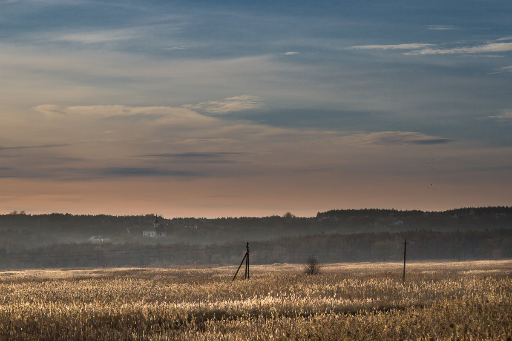

Resize the browser window to see the effect!
This example shows a menu that will float to the left of the page if the viewport is 480 pixels wide or wider. If the viewport is less than 480 pixels, the menu will be on top of the content.
This example shows a menu that will float to the left of the page if the viewport is 480 pixels wide or wider. If the viewport is less than 480 pixels, the menu will be on top of the content.
The translate() method moves an element from its current position:
Use the border-radius property to create rounded images:
